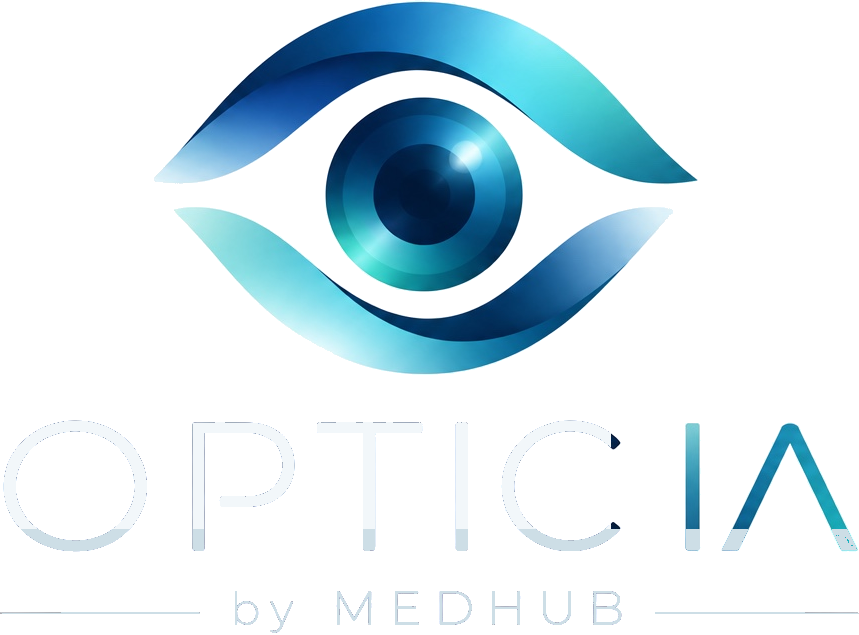

MICROSCOPÍA · LIVE ACQUISITION
Conectá la ToupCam y seleccioná la cámara.
BRILLO
IMAGEN · SIN HERRAMIENTA
UCMOS · conexión exclusiva mediante OPTIC Bridge + ToupCamSDK. La cámara integrada del Mac no se utiliza. Podés congelar, volver al vivo o capturar y analizar.